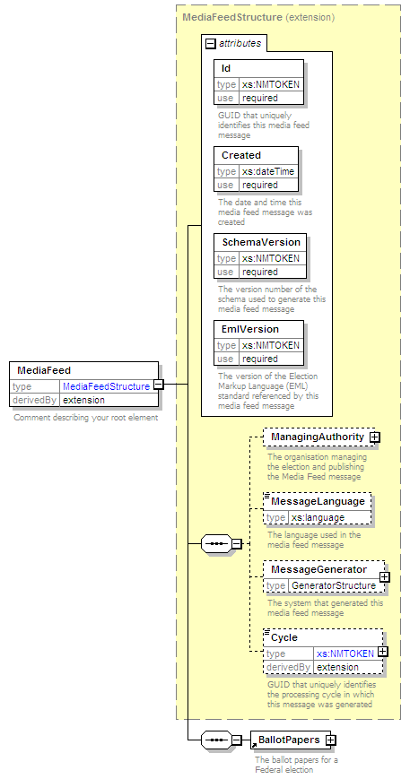

| diagram |  | ||||||||||||||||||||||||||||||||||||||
| namespace | http://www.aec.gov.au/xml/schema/mediafeed | ||||||||||||||||||||||||||||||||||||||
| type | extension of MediaFeedStructure | ||||||||||||||||||||||||||||||||||||||
| properties |
|
||||||||||||||||||||||||||||||||||||||
| children | ManagingAuthority MessageLanguage MessageGenerator Cycle BallotPapers | ||||||||||||||||||||||||||||||||||||||
| attributes |
|
||||||||||||||||||||||||||||||||||||||
| annotation |
|
||||||||||||||||||||||||||||||||||||||
| source | <xs:element name="MediaFeed"> <xs:annotation> <xs:documentation>Comment describing your root element</xs:documentation> </xs:annotation> <xs:complexType> <xs:complexContent> <xs:extension base="MediaFeedStructure"> <xs:sequence> <xs:element ref="BallotPapers"/> </xs:sequence> </xs:extension> </xs:complexContent> </xs:complexType> </xs:element> |